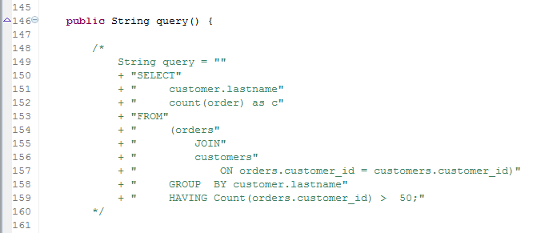
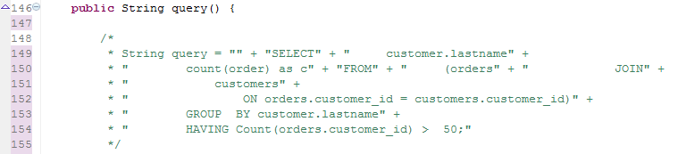
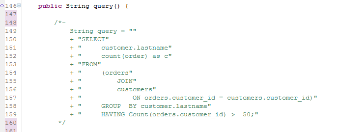

Spring Boot: How to use YML properties in tests
Spring Boot has built-in support for externalized configuration using either .properties or .yml files. Unfor

SQL before formatting

SQL after formatting
If you are using multi-line comments (/* */), the fix to prevent Eclipse from applying its auto-formatting is very simple: just add a dash (-) after the asterisk at the beginning of the comment (see below).

The dash on line 148 prevents auto-formatting